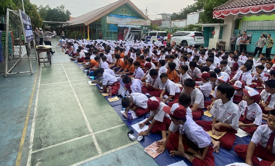

Cilandak Kota Jakarta Selatan
Tempat di mana pendidikan berkualitas dan kepedulian terhadap lingkungan berjalan seiring.

Terlampir adalah Surat Keputusan Kepala SDN Pondok Labu 03 Nomor 062 Tentang Penetapan Kelulusan.